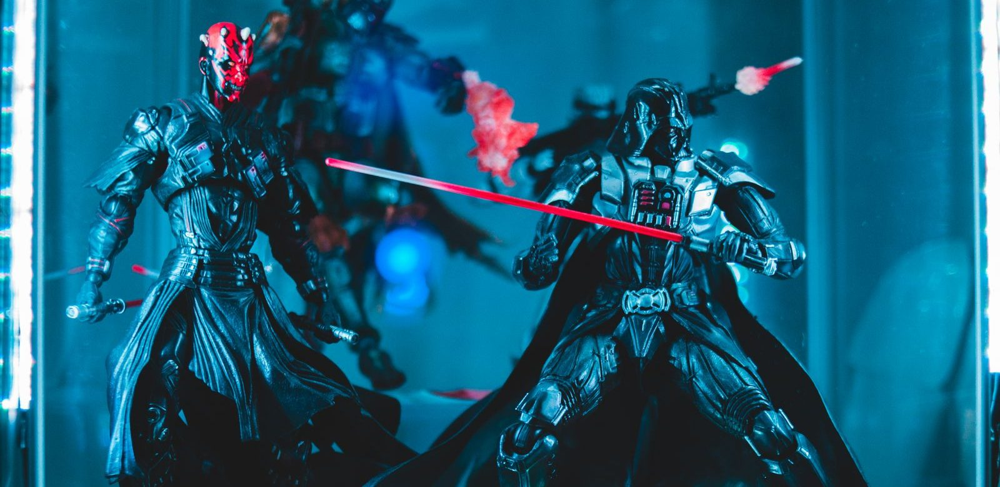

Avengers speelgoed: 9 beste keuzes per leeftijd
Avengers speelgoed is er in drie soorten: grote speelfiguren om mee te spelen, LEGO om te bouwen, en spullen waarmee een kind zelf de held is. Hieronder negen keuzes, van een stevige Hulk voor een kleuter tot de hele ploeg van Age of Ultron in LEGO, met bij elke keuze voor wie hij is, wat goed is en wat minder.

In het kort
Het korte antwoord: voor een kind tot acht jaar is een grote Titan Hero-figuur van 30 centimeter het beste Avengers speelgoed, en vanaf zeven jaar een kleine LEGO-set met held en tegenstander. Een kleuter kiest uit de figuren van de tekenfilmserie Spidey and his Amazing Friends, een kind dat zelf de held wil zijn krijgt de vuisten van de Hulk of het schild van Captain America, en de grote LEGO-sets bewaar je voor tien jaar en ouder. De prijs van elke keuze staat live in de tabel hieronder en in elk blok, want die verandert.
Waar het verschil in zit
Spelen, bouwen of zelf de held zijn. Dit is de eerste vraag, belangrijker dan welke Avenger het wordt. Een Titan Hero-figuur gaat mee naar buiten en in bad, een LEGO-set is eerst een middag bouwen en daarna spelen, en vuisten of een schild maken van het kind zelf de held. Een kind dat nooit met poppetjes speelt, wordt niet blij van de beste figuur.
Grootte en hoeveel het beweegt. De Titan Hero-figuren zijn 30 centimeter, stevig en bewegen op een paar plekken: goed om mee te spelen, minder om mee te poseren. Verzamelfiguren uit de Marvel Legends-lijn zijn kleiner, bewegen overal en hebben losse handjes en wapens, en zijn daardoor juist niet voor jonge kinderen. In deze gids staan daarom alleen speelfiguren.
De leeftijd op de doos. Bij LEGO zegt de leeftijd vooral of een kind de set zelf kan bouwen. De kleinste sets hieronder raadt LEGO aan vanaf zeven jaar, de grootste vanaf tien. Onder de zeven bouw je samen, of je kiest geen LEGO. De figuren uit de Spidey-serie zijn gemaakt voor kinderen vanaf drie jaar.
Eén held of het hele team. De Avengers zijn een team, en veel kinderen willen er meer dan één. Daarom staan er twee keuzes in met meerdere helden in één doos: een set van drie Titan Hero-figuren en de grote LEGO-set met de ploeg uit Age of Ultron. Wie de helden nog op een rij wil zetten, vindt ze in wie zijn de Avengers.
Speelfiguren
Hulk uit Spidey and his Amazing Friends
Voor de jongste Avengers-fan is dit de lijn om uit te kiezen. De figuren horen bij de tekenfilmserie die kleuters echt kijken, ze zijn stevig en hebben geen losse onderdelen om kwijt te raken. Hulk is bovendien de Avenger die een kleuter het snelst herkent: groot en groen heeft geen uitleg nodig.
- Volgens de verpakking vanaf drie jaar
- Geen kleine losse onderdelen
- Hoort bij een serie die kleuters kennen
- Kleiner dan de figuren die oudere kinderen willen
- Nog maar een handvol beoordelingen
Titan Hero Deluxe Hulk, 30 cm
De grote, stevige speelfiguur waar de meeste kinderen aan denken bij Avengers speelgoed, en van alle figuren in deze lijn de keuze met de meeste beoordelingen. Hij kan tegen vallen, stoten en een middag in de zandbak. Uit dezelfde lijn zijn er ook Iron Man, Thor en Captain America, allemaal van hetzelfde formaat, dus ze passen naast elkaar.
- Groot en stevig
- De meeste beoordelingen van de Titan Hero-figuren, en goede
- Uit te breiden met andere Avengers van hetzelfde formaat
- Beweegt maar op een paar plekken, dus poseren lukt beperkt
- Geen lichtjes of geluid
Titan Hero Black Panther, Iron Man en Thor
Drie Avengers in één doos, in hetzelfde formaat als de Hulk hierboven. Voor een kind dat de Avengers als team wil naspelen is dit de snelste weg, en per figuur ben je goedkoper uit dan met drie losse dozen. Samen met de Hulk heb je de kern van het team.
- Drie helden tegelijk
- Zelfde formaat als de losse Titan Hero-figuren
- Goed voor broertjes en zusjes die samen spelen
- Pas één beoordeling bij bol, dus de score zegt nog weinig
- Geen Captain America en geen Hulk in de doos
Zelf de held zijn
Hulk Gamma Smash-vuisten
Niet elk kind wil een figuur vasthouden; veel kinderen willen zelf de held zijn. Met deze grote vuisten over de handen is het kind de Hulk, en dat werkt op een feestje net zo goed als op de bank. Van alle keuzes in deze gids heeft deze, na de LEGO Iron Man, de meeste beoordelingen.
- Ruim beoordeeld, en goed
- Meteen te gebruiken, niets te bouwen
- Leuk op een verkleedfeest
- Met vuisten aan kun je verder niets vastpakken
- Binnen gaat er af en toe iets om
Schild van Captain America, van schuim
Het kleinste cadeau in deze gids en het enige dat ook in een schoen of naast een ander pakje past. Het schild is van schuim, dus er gaat niets kapot als het tegen een broertje of een kast aan komt. Er zijn nog geen beoordelingen, en we kiezen hem toch omdat schuim voor een jong kind beter is dan hard plastic.
- Zacht schuim, veilig om mee te spelen
- Klein cadeau, past er altijd nog bij
- Captain America is de leider van het team
- Nog geen beoordelingen bij bol
- Schuim is minder stevig dan plastic
LEGO Avengers
LEGO Iron Man Mechapantser
De veiligste LEGO-keuze in deze gids: van alles hier heeft deze set verreweg de meeste beoordelingen, en ze zijn hoog. Volgens LEGO zitten er 131 stenen in, vanaf zeven jaar, en je bouwt een groot pantser waar de minifiguur van Iron Man in past. Klein genoeg om in een middag zelf af te krijgen.
- Verreweg de meeste beoordelingen van alle keuzes
- Op eigen kracht te bouwen vanaf zeven jaar
- Het pantser beweegt, dus er valt daarna mee te spelen
- Eén held en geen tegenstander
- Een ervaren bouwer is er snel doorheen
LEGO De Hulk-truck tegen Thanos
Een kleine set met wat een kind na het bouwen nodig heeft: een held, een schurk en iets dat rijdt. Volgens LEGO zitten er 229 stenen in, vanaf zeven jaar, met een grote truck en de minifiguren van de Hulk en Thanos, de grote tegenstander van de Avengers.
- Held en tegenstander in één doos
- Hoge score, al zijn het nog maar een paar beoordelingen
- Een voertuig om mee te rijden en te spelen
- Pas een paar beoordelingen bij bol
- LEGO meldt dat deze set binnenkort uit de handel gaat
LEGO Captain America tegen de Rode Hulk
Een stap groter: een superheldenvliegtuig met vier minifiguren, volgens LEGO Captain America, Falcon, de Rode Hulk en Ruth Bat-Seraph, uit de film Captain America: Brave New World. Volgens LEGO zitten er 223 stenen in, vanaf acht jaar. Goed voor een kind dat al een paar kleine sets heeft gebouwd en meer figuren wil.
- Vier minifiguren, held en tegenstander
- Een vliegtuig, dus veel om mee te spelen
- Hoog beoordeeld
- Nog maar een paar beoordelingen
- De film is voor tieners, een jong kind kent de Rode Hulk niet
LEGO The Avengers Assemble: Age of Ultron
Het duurste idee in deze gids en het enige met echt het hele team erin. Volgens LEGO zitten er 613 stenen in, vanaf tien jaar, met acht minifiguren en een groot figuur, uit de film Avengers: Age of Ultron. Dit is een cadeau dat de avond draagt, en daarna kan een kind de grote gevechten uit de film zelf naspelen.
- Acht minifiguren en een groot figuur: het hele team
- Groot genoeg om het enige cadeau te zijn
- Hoog beoordeeld
- Het duurste idee op deze pagina
- Nog maar een paar beoordelingen
- LEGO raadt hem aan vanaf tien jaar
Welk Avengers speelgoed bij welke leeftijd
Drie tot vijf jaar. Kies uit de lijn van Spidey and his Amazing Friends, zoals de Hulk hierboven, of het schild van schuim. Geen LEGO en geen verzamelfiguren: te klein en te breekbaar. Meer ideeën voor deze leeftijd staan in welk superhelden cadeau bij welke leeftijd.
Vijf tot zeven jaar. De leeftijd van de grote speelfiguur. Begin met de Titan Hero Hulk of de set van drie, en vul later aan met losse helden. Wil het kind liever zelf de held zijn, dan zijn de Hulk-vuisten de keuze.
Zeven tot tien jaar. Nu kan een kind zelf LEGO bouwen. Het Iron Man Mechapantser is de veilige start, de Hulk-truck geeft er meteen een tegenstander bij, en vanaf acht jaar past Captain America tegen de Rode Hulk. Welke LEGO-sets er nog meer zijn, staat in de leukste LEGO-sets voor superheldenfans.
Tien jaar en ouder. Age of Ultron is hier onze eerste keuze, omdat het hele team erin zit. Zoek je iets voor een oudere fan of een volwassene, kijk dan in Marvel cadeau: 12 ideeën per leeftijd en budget, met onder meer een bordspel en de LEGO Quinjet uit Avengers: Doomsday.
Welke Avenger is het sterkst?
Die vraag stellen kinderen bij het kiezen vaak. In de films gelden Thor en de Hulk als de sterksten van het team: Thor met zijn hamer en zijn bliksem, de Hulk met zijn spierkracht, die groeit naarmate hij bozer wordt. Iron Man is de slimste, Captain America de leider. Voor het spelen maakt het weinig uit: een Avenger is het sterkst als hij samen met de anderen vecht, en daar gaan de films ook over. Daarom is een set met meerdere helden vaak een beter cadeau dan de sterkste held alleen.
💡 Wist je dat?
De Avengers bestaan al heel lang. Ze verschenen voor het eerst in een stripboek in 1963.
Wat wij niet zouden kopen
Een verzamelfiguur voor een kind dat wil spelen. Figuren uit de Marvel Legends-lijn zijn prachtig, maar hun wisselbare handjes en wapens raken bij een kind van vijf binnen een week kwijt. Bovendien staan veel van de nieuwste figuren, zoals die uit Avengers: Doomsday, nu nog als voorbestelling bij bol. Voor spelen is een Titan Hero-figuur beter.
Een grote LEGO-set voor een kind dat nog nooit gebouwd heeft. Een set van zeshonderd stenen als eerste LEGO eindigt vaak half af in een bak. Begin met een kleine set zoals het Iron Man Mechapantser; de grote set komt later wel.
Een elektronische verzamelhelm als speelgoed. Bij bol staan dure helmen van Iron Man voor verzamelaars. Die zijn gemaakt om neer te zetten, niet om mee te spelen, en voor een kind zijn de Hulk-vuisten of het schild een beter en veel goedkoper cadeau.
Veelgestelde vragen
Wat is goed Avengers speelgoed voor een kind van vier? Een figuur uit de Spidey-serie, zoals de Hulk, of een grote Titan Hero-figuur van 30 centimeter. Die zijn stevig en hebben geen kleine onderdelen. Ook het schild van Captain America van schuim is geschikt.
Welke LEGO Avengers-set is goed voor een beginner? Het Iron Man Mechapantser: volgens LEGO 131 stenen en vanaf zeven jaar, en het heeft van alle LEGO-sets in deze gids de meeste beoordelingen.
Welke Avenger is het sterkst? In de films gelden Thor en de Hulk als de sterksten van het team. Iron Man is de slimste en Captain America de leider.
Wat is het verschil tussen Titan Hero en Marvel Legends? Titan Hero-figuren zijn groot (30 centimeter), stevig en gemaakt om mee te spelen. Marvel Legends-figuren zijn kleiner, beweeglijker en hebben losse accessoires; die zijn bedoeld voor verzamelaars.
Welke LEGO-set heeft het hele Avengers-team? The Avengers Assemble: Age of Ultron, met volgens LEGO acht minifiguren en een groot figuur. LEGO raadt hem aan vanaf tien jaar.
Hoe wij deze negen gekozen hebben
We hebben gezocht naar Avengers speelgoed dat over leeftijd, soort en budget gespreid is: van een figuur voor een kleuter tot een grote LEGO-set, van een klein cadeau tot het grote pakje. Elk product is op 6 oktober 2026 bij bol nagekeken op prijs en levertijd; producten die nog niet verschenen zijn of alleen voor te bestellen zijn, hebben we laten liggen. Het aantal stenen en de leeftijd van de LEGO-sets komen van LEGO zelf. Kleding hebben we bewust weggelaten.
Over sterren: bij speelgoed zijn de aantallen beoordelingen vaak klein. Het aantal staat in elk blok, zodat je zelf kunt zien hoeveel een score zegt. Een keuze zonder beoordelingen staat er alleen in als wij kunnen uitleggen waarom.
Via de knoppen naar bol verdienen wij een kleine commissie. Dat verandert niets aan wat hier staat: valt een product bij bol weg, dan verdwijnt het blok inclusief onze tekst, en de prijs die je ziet is altijd de actuele van bol.
Zoek je een cadeau voor een bepaald moment? Kijk dan ook in onze gidsen voor Sinterklaas en Kerst, lees meer over de Avengers, of kijk alle Avengers-films in de juiste volgorde.